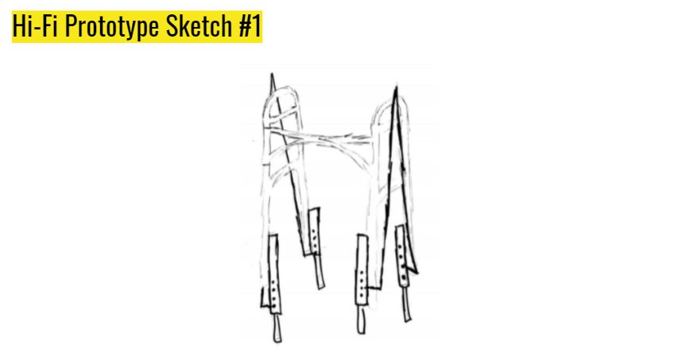
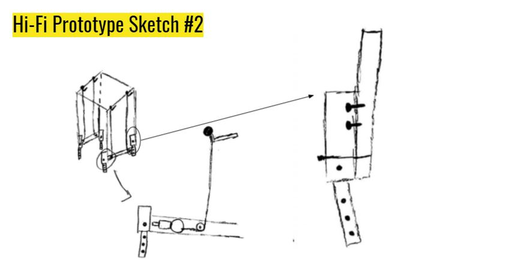
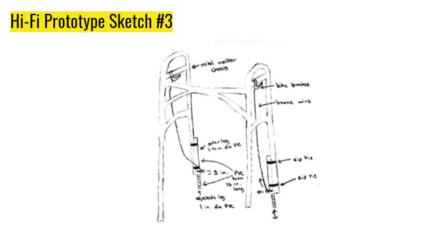
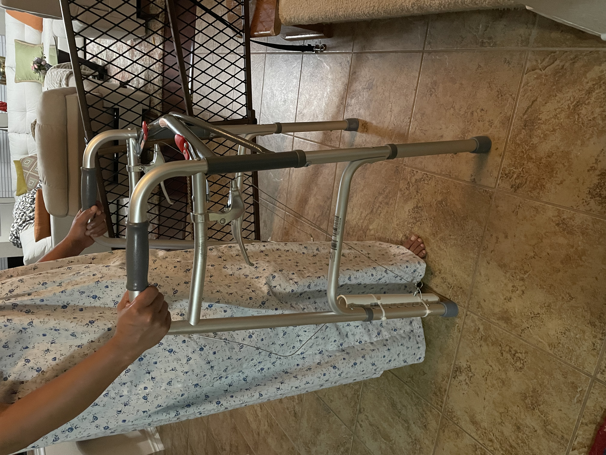
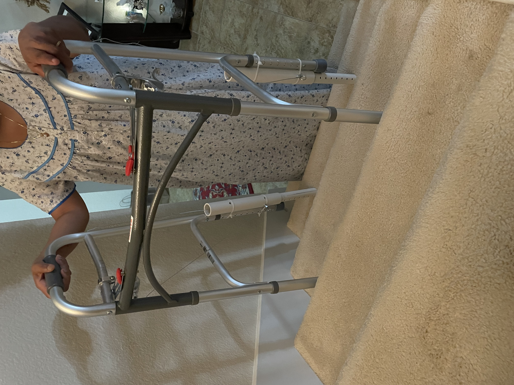
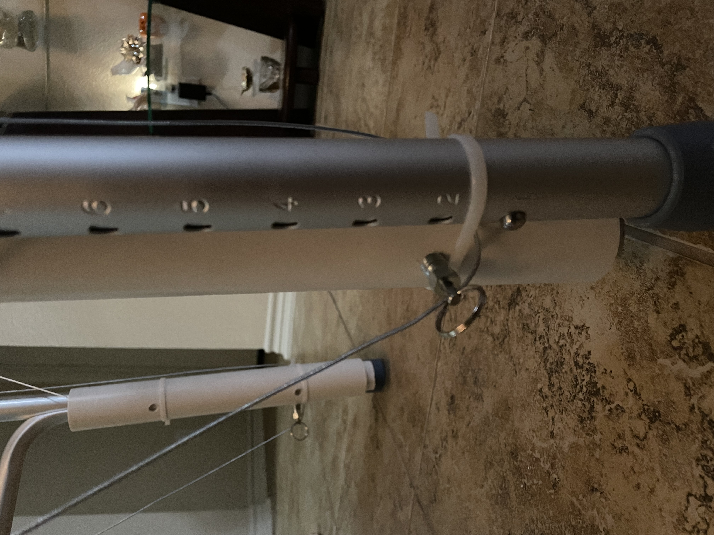
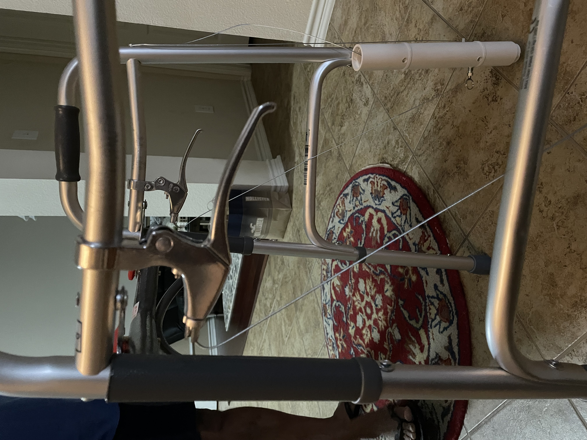

The Stair-Climbing Walker
Co-Designer
Name: Ambiga
Living Situation: Lives in a 2 floor house alongside a family friend
Daily Routine: Wakes up, makes a cup of coffee, cooks breakfast, looks over any work/chores she has to complete, talks to friends/family, cooks lunch, goes on a walk, completes rest of whatever work/chores she has left, cooks dinner, sleeps (in between whenever she has time she watches TV or plays games on her tablet)
Hobbies: Art, Cooking, Walking
Occupation: None
Relation to Me: Grandmother
AT-Related Need: Knee pain that flares up whenever she puts too much pressure on her knee
Solutions they have already tried: Massaging knee with ointment, sleeve to compress knee
Co-Designer Needs Statement
Ambiga needs to be able to...
- walk up and down the stairs while producing less stress on her knee
- efficiently and safely walk up the stairs
- easily get on and off the couch
- move around the house and areas outside the house efficiently and quickly
Product Requirements
- Not easily corrodible
- Little to no nooks within the product
- Must work on all types of surfaces including flat, staircase, grass, wood, stone, etc.
- Handles to grab onto and move around easier
- Light weight (less than 15 lbs)
- Should be able to support 55+ lbs
Initial Brainstorming Narrative
Had to come up with something to help keep pressure off of her knee or to help keep her knee sturdy within her daily activities.
- Knee Brace
- Walking Cane
- Walker
- Sturdy Handle to help her get on and off of couch
- Wheelchair
Out of all of these products I thought the brace, cane, or walker would be the best because it would be available to her in her daily life and not focused on one specific activity in particular.
I took these three ideas and talked it out with her and she liked the walker the best because she said it would have the most postive impact and that it seemed more realistic.
Initial Prototype
Overall Design Objective: The product should help relieve pressure off of my grandma's knee whe she is walking up/down the stairs or when walking across flat ground.
Prototype Design Objectives: With this specific protoype I hope to be able to see if the measurements are correct and if the adjustable legs work like I want them too. I don't want to see if they work structurally but rather if they work based on pure height and keeping the walker flat when going up and down the stairs.
Assumptions: I am assuming that the staircases she will walk up/down will not exceed the height of the stairs I have at my house. I am assuming this because the stairs at my house are very steep in general and when compared to her usual route of walking they are much larger than any staircase she will witness.
Bill of Materials: I am only using pencils, cardoard, hotglue, and duct tape that I already have at home, so there is no purchasing cost.


Testing Plan
Test Plan: I plan on just using my mom to test this intial prototype because in terms of height, armspan, etc. my mom and grandma are very similar. The cardboard prototype is not structurally sound so having my grandma walking up the stairs with it would put unnecessary pressure on her knee and I don't want to cause her any pain. So I instead am planning on having my mom holding the walker as the goes up and down the stairs and visually see if the walker is still flat and at a comfortable level to hold.


Test Results
The measurements came back positive and the walker maintained a flat and comfortable height level as it went up and down the stairs. One thing, however, was that there was a significant amount of strain on my tester's arm and legs because teh cardbopard did not have any strong structure for her to rest her weight on. This would be the problem we would tackle in the next protoype: to make it stronger.
Prototype Conclusions
Overall, this protype was a success in terms of what it was supposed to measure and conclude. The next steps would be to design a stronger and more structurally sound version of this prototype using the same measurements.
Final Prototype
Bill of Materials
- 1” x 10’ Class 200 Plain End PVC Pipe x 1 - $7.96
- 1 ¼” x 10’ Schedule 40 Plain End PVC Pipe x 1 - $3.42
- Steel Retractable Spring Plunger with Pull Ring, 3/8"-16 Thread, .8-3 lb. Nose Force x 2 - $21.40
- Drive Medical Deluxe Two Button Folding Walker x 1 - $31.40
- Chooee Bicycle Brake Lever, Mountain Bike Handlebar Brake Lever for MTB, Black/Silver - (comes in a pair) x 1 - $11.99
- HDX 8 in. Zip Ties (20 pack) - $2.48



Build Instructions
The first step I took into creating my product was loosening the horizontal bar underneath the handles and slipping on the bike brake lever through that bar. Once I pushed it into the right position, I tightened up the lever and bar so they would stay in place. The next step I took was to mark the holes and drill them out inside the pvc pipes. I then screwed in the spring mechanism to the larger pvc pipe, slipped in the smaller pvc pipe into the larger one, and tested the mechanism manually by pulling on the spring mechanism with my hand. Once I saw that it worked, I ziptied the pvc pipes to the inside of the back two legs of the walker very tightly using pliers. Finally, when it felt like it wasn't going to come out of place, I then looped the bike brake wire through the spring mechanism, pulled it tight and attached it to an already existing screw on the upper part of the walker.
Test PlanMy testing plan was to have my grandma use the walker on a flat surface and on the staircase if she was comfortable and use qualititative data and collect statements from her to determine the results by asking questions about the sturdiness of the walker, the measurements of the walker, and the functionality of the adjustable legs.


ResultsUpon receiving results on the product I created, I found that there was no issue with the measurements or sturdiness of the walker. It was the perfect height and my co-designer said she was confident that it could support her weight. The general functionality of the legs worked as well as it held the walker at a comfortable and flat level as my co-designer went up the stairs. However, not everythiong ran smoothly; I ran into some issues along the way. For example, the bike brake mechanism did not work consistently. It worked for the first 1-2 times before there was too much slack on the wire and it wouldn't work anymore. Another issue I ran into was that the inner adjustable leg kept spinning when it was moving up and down so it was sometimes hard to lock it into place.


Future Improvements
In future iterations, I want to focus on the issues I came across during my testing. I would like to come up with a solution to fix the bike brake mechanism so that it works consistently and I want to be able to create some sort of ridge between the inner and outer leg to prevent the inner leg from spinning and ensure that it is only moving vertically.
Scalability
I believe the product I created is scalable to a certain extent, despite the fact that it was created specifically for my codesigner. The problem we tackled in general is not that specific and targets people with knee pain, so I believe it could help a great deal of people. The reason why I believe it's only scalable to a certain extent is because of the process it takes to create the product. It's quite tedious and involves a lot of time, so to replicate it in the 100s or 1000s would be pretty hard and it wouldn't be super efficient.
Design Process Reflection
Throughout this entire program, I had a lot of fun learning and going through the prototyping design process and working with my codesigner. I feel like it's a super effective process and it can teach you a lot about specific requirements to create a finished and individualized product. Over the course this process, though, I did experience hiccups here and there, but at the end I feel like I progressed more as an engineer and had many key takeaways:
- Having a co-designer in the process of developing something can really open your eyes and help you create an incredible product
- People with ‘disabilities’ are only considered disabled because the world isn’t able to accommodate for their needs
- When developing a product there is always a chance you will run into a problem no matter how much planning is done
Down the road, if I were to do this process again, I would make sure to have these takeaways in the back of my mind so things aren't as frustrating or confusing and so that it would hopefully run more smoothly.